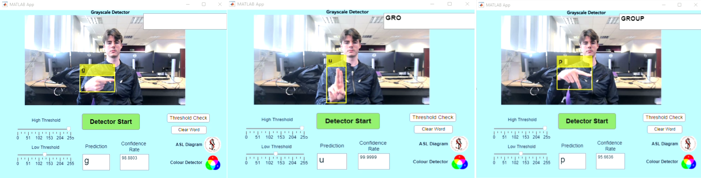

Machine Learning Project
- Using Machine Learning to translate sign language to text
For this project, I worked with a team to develop an app in MATLAB which was able to recognise ASL sign language and convert it into a phrase or sentence. This was achieved through feeding the program training data, which consisted of 4 to 5 different photos of different people demonstrating every letter of the alphabet in ASL. This could then be used to train the application to allow it to spot hand signs on its own. Below are some screenshot of someone demostrating the app working
